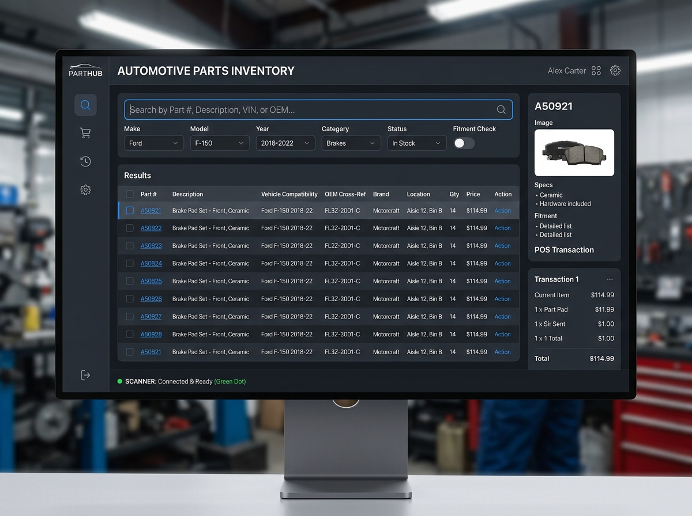

VoraPOS — Terminal

VoraPOS01
High-velocity retail & catalog intelligence
A resilient desktop POS engineered for heavy-inventory retail. Features offline-first transactional integrity, sub-millisecond barcode and catalogue search, and intelligent parts indexing tailored directly to inventory datasets.
start a similar build →